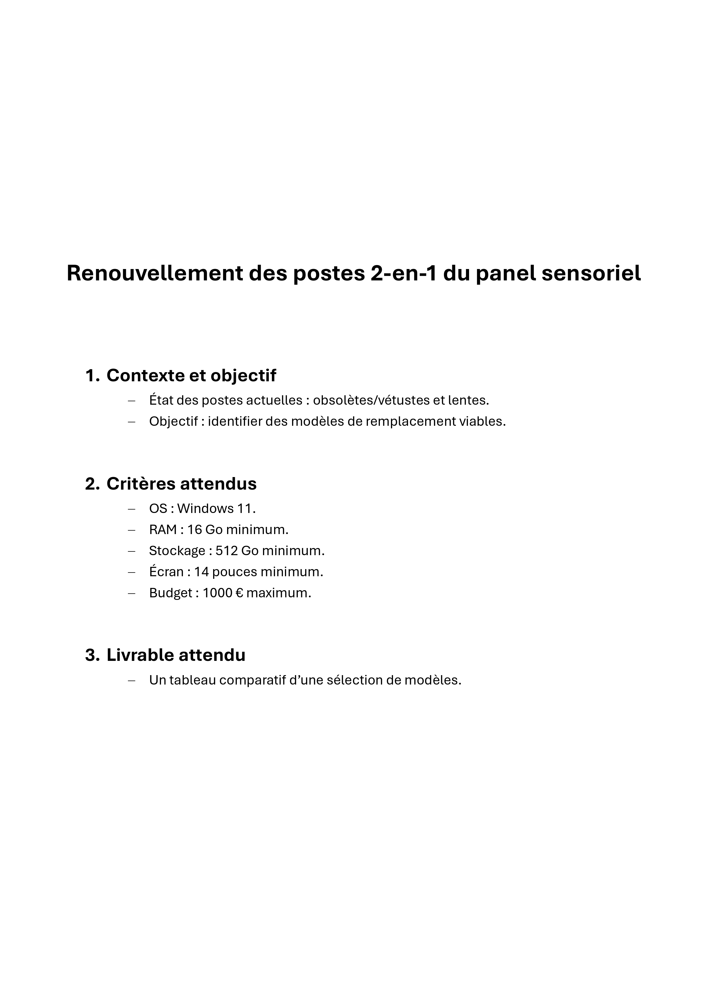
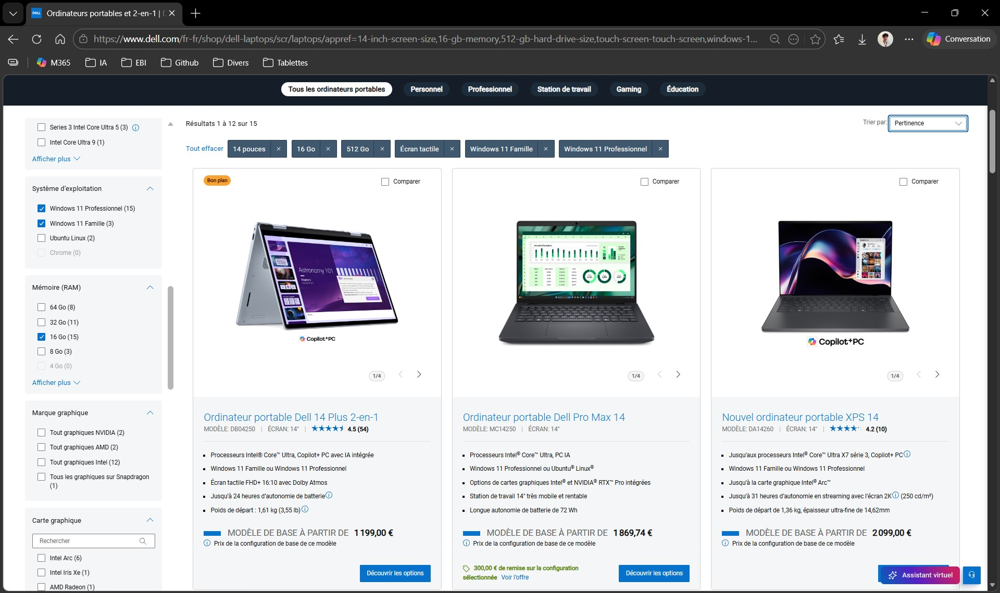
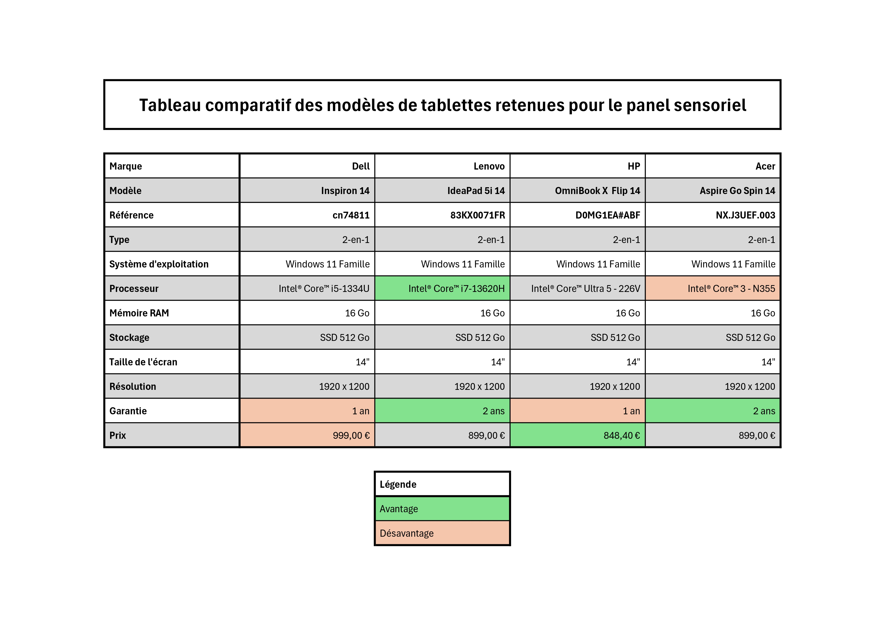

Dans le cadre de mon alternance au sein du service informatique de l’EBI, j’ai participé à une étude de renouvellement d’équipements destinés au panel sensoriel.
Les postes utilisés présentaient des signes d’obsolescence, notamment des lenteurs et une perte de confort d’utilisation. Mon intervention a consisté à rechercher des modèles de remplacement compatibles avec les attentes du service, puis à formaliser les résultats dans un support de comparaison exploitable.
Cette réalisation s’inscrit dans une démarche d’évolution du parc informatique, avec prise en compte des contraintes techniques, budgétaires et organisationnelles de l’établissement.
Objectifs
Analyser le besoin exprimé par le responsable informatique.
Identifier les critères techniques et budgétaires à respecter.
Rechercher des ordinateurs portables 2-en-1 ou convertibles adaptés à l’usage du panel sensoriel.
Vérifier les caractéristiques techniques des modèles présélectionnés.
Comparer les références retenues dans un tableau synthétique.
Produire un support d’aide à la décision pour orienter le choix d’achat.
Environnement de travail
Structure d'accueil : EBI (École de Biologie Industrielle)
Service concerné : service informatique
Usage cible : panel sensoriel
Outils utilisés : navigateur web, sites constructeurs, Microsoft Excel
Constructeurs consultés : Dell, HP, Lenovo, Microsoft, Acer, Asus
Livrable produit : tableau comparatif d’une sélection de modèles
Cadrage de la demande
La mission a débuté par la présentation du besoin par mon responsable informatique. Celui-ci m’a transmis un document de cadrage précisant le contexte du renouvellement, les caractéristiques attendues et le livrable à produire.
Les équipements recherchés devaient répondre à plusieurs critères minimaux : système d’exploitation Windows 11, 16 Go de mémoire vive, 512 Go de stockage, écran d’au moins 14 pouces et budget maximal de 1000 € par poste.
Cette phase de cadrage a permis de définir une base de recherche objective et de fixer les critères à utiliser pour comparer les différentes références.

Recherche de modèles compatibles
J’ai ensuite consulté les sites de plusieurs constructeurs afin d’identifier des ordinateurs portables 2-en-1 ou convertibles susceptibles de répondre au besoin.
Les filtres proposés par les sites constructeurs ont été utilisés pour cibler les configurations compatibles avec les critères définis : taille d’écran, mémoire vive, capacité de stockage, système d’exploitation, format tactile ou convertible et prix.
Cette recherche a permis d’élargir la sélection à plusieurs marques et d’écarter les modèles qui ne respectaient pas les contraintes techniques ou budgétaires.

Vérification des caractéristiques techniques
Après une première sélection, j’ai consulté les fiches techniques des modèles identifiés afin de vérifier la conformité réelle des configurations.
Les éléments contrôlés portaient notamment sur le processeur, la mémoire vive, le stockage, la taille et la résolution de l’écran, le type de dalle, la référence constructeur, la garantie et le prix.
Cette étape était nécessaire afin de fiabiliser les informations intégrées au tableau comparatif et d’éviter de retenir un modèle uniquement sur la base des résultats de recherche ou des informations commerciales résumées.
Tableau comparatif et restitution
À l’issue des recherches et des vérifications, quatre modèles ont été retenus : Dell Inspiron 14, Lenovo IdeaPad 5i 14, HP OmniBook X Flip 14 et Acer Aspire Go Spin 14.
J’ai saisi ces références dans un tableau comparatif Excel afin de regrouper les informations essentielles : marque, modèle, référence, type d’appareil, système d’exploitation, processeur, mémoire vive, stockage, écran, résolution, type de dalle, garantie et prix.
Une mise en forme visuelle a été appliquée pour faire ressortir les caractéristiques les plus avantageuses et les points les moins favorables. Cette présentation permet de faciliter la lecture du tableau et d’appuyer la comparaison entre les modèles.
Le tableau a ensuite été transmis à mon responsable. Le modèle HP OmniBook X Flip 14 a été privilégié, notamment en raison de son prix inférieur aux autres références retenues et de l’existence d’un contrat-cadre entre l’EBI et HP, fournisseur déjà référencé par l’établissement.

Résultats obtenus
Besoin formalisé à partir du document de cadrage transmis par le responsable informatique.
Recherche menée auprès de plusieurs constructeurs afin d’obtenir une sélection représentative.
Modèles non conformes écartés à partir des critères techniques et budgétaires.
Fiches techniques consultées pour vérifier les caractéristiques des références présélectionnées.
Quatre modèles conformes au besoin retenus et comparés.
Tableau comparatif structuré réalisé sous Excel.
Support d’aide à la décision transmis au responsable informatique.
Choix final orienté vers un modèle compatible avec les contraintes de prix et les accords fournisseurs de l’établissement.
Compétences mobilisées
Gérer le patrimoine informatique
Identification de ressources matérielles adaptées au renouvellement d’une partie du parc informatique.
Répondre aux incidents et aux demandes d’assistance et d’évolution
Prise en charge d’une demande d’évolution liée à l’obsolescence et aux lenteurs des postes existants.
Travailler en mode projet
Analyse du besoin, recherche de solutions, comparaison, restitution et contribution à la décision finale.
Mettre à disposition des utilisateurs un service informatique
Contribution au choix d’équipements destinés à améliorer les conditions d’utilisation du panel sensoriel.
Organiser son développement professionnel
Développement d’une démarche de comparaison technique, de veille matérielle et de formalisation d’un livrable professionnel.
Bilan personnel
Cette réalisation m’a permis de travailler sur une problématique concrète de renouvellement d’équipements informatiques en entreprise.
J’ai appris à transformer un besoin exprimé en critères de recherche, à comparer plusieurs solutions de manière structurée et à produire un document synthétique destiné à faciliter une décision d’achat.
Ce projet m’a également permis de constater que le choix d’un équipement ne repose pas uniquement sur ses caractéristiques techniques. Le budget, la garantie, la disponibilité, les fournisseurs référencés et les contrats-cadres de l’organisation sont également des éléments déterminants dans un contexte professionnel.